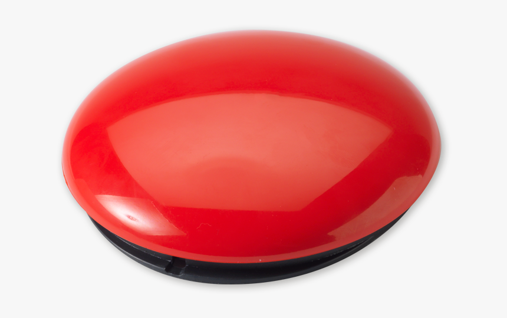

Creating Subtitles¶
In this section, you will learn how to:
Import Subtitles from an External File
Import and Adjust the Appereance of your Video and Audio File
Select and Preview a specific Audio Section
Create Subtitles in the Editor
Other options
This video will teach you everything you need to know about creating subtitles, but if you prefer reading the instrucctions instead, keep scrolling down.
Opening a New Subtitle File¶
Before creating your subtitles, you need to create a subtitling project.
To create a new subtitling project:
In the interface, click the New  button.
{kind=link}
A new, blank file will appear.
Importing Subtitles from an External File¶
If you already have your subtitles typed out in a text file (e.g.), Notepad), you can import the file into Jubler.
To locate the external file, click the Load Screen button at the top of the interface.
In the window that appears, select the file you want to upload.
To confirm the selection, click Open. The subtitles will now appear in the interface.
Warning
warning
Remember!
By default, the audio track is also displayed with the video preview. Jubler needs to be in full screen for the video and audio track to be displayed side-by-side.
Importing and Adjusting the Appeareance of your Video and Audio File¶
Click on the aye button.
To choose your movie file, click Browse to the rigth of the text field.